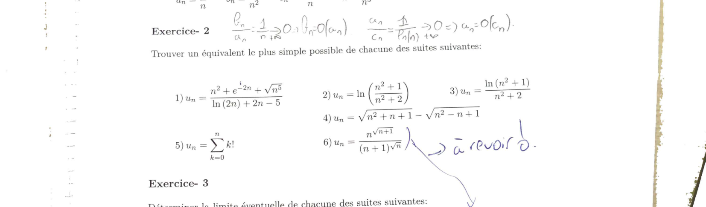
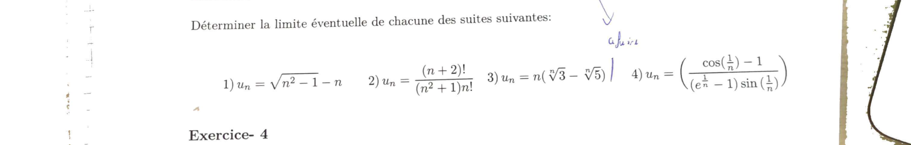
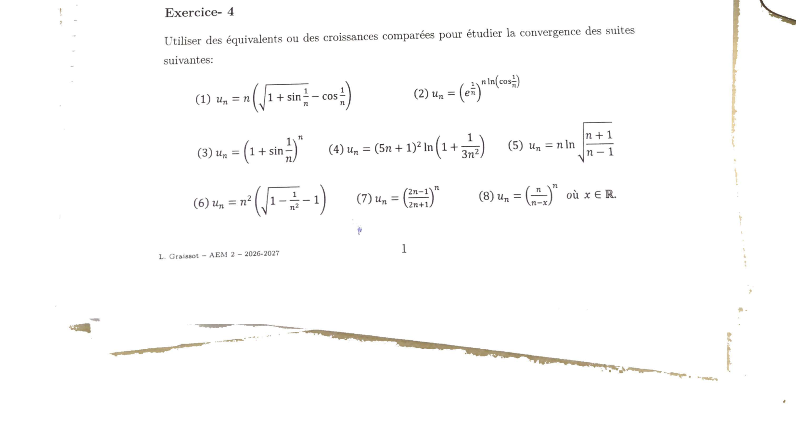
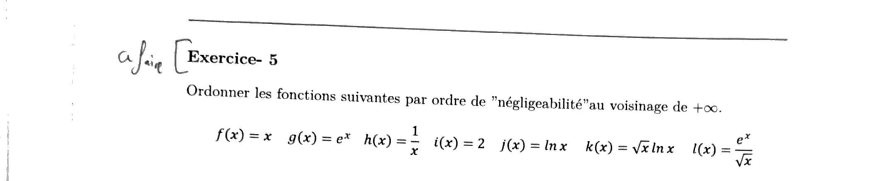
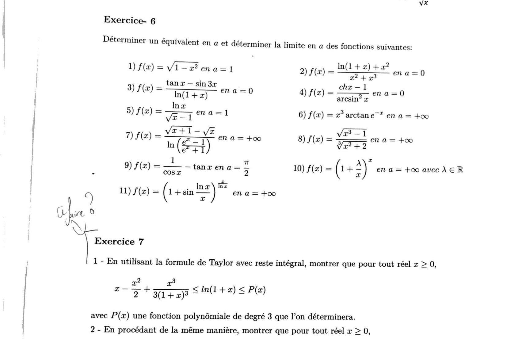
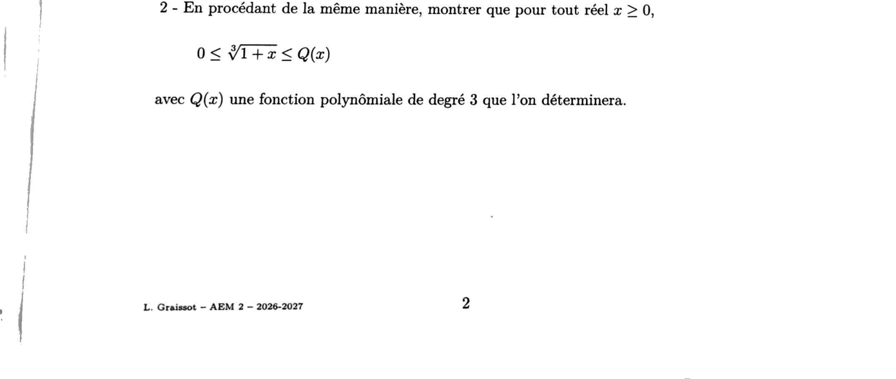
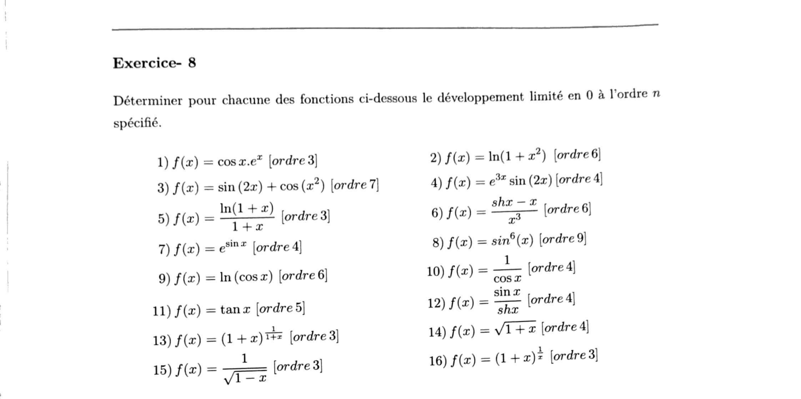

Analyse asymptotique
Relations de comparaison (petit-o, équivalents) pour les suites et les fonctions, puis développements limités (Taylor, opérations, applications). Cours de L. Graissot — ECAM AM2, 2026-2027.
1. Résumé de cours détaillé
1.1 Relation de négligeabilité \(o\) — cas des suites
1.2 Relation d'équivalence — cas des suites
1.3 Cas des fonctions
1.4 Quelques remarques et notions importantes
2. Développements limités
2.1 Formule de Taylor avec reste intégral
2.2 Formule de Taylor-Young
| DL usuel en 0 (\(x\to0\)) |
|---|
| \(e^x=1+x+\dfrac{x^2}{2!}+\cdots+\dfrac{x^n}{n!}+o(x^n)\) |
| \(\operatorname{ch}x=1+\dfrac{x^2}{2!}+\dfrac{x^4}{4!}+\cdots+\dfrac{x^{2n}}{(2n)!}+o(x^{2n+1})\) |
| \(\operatorname{sh}x=x+\dfrac{x^3}{3!}+\cdots+\dfrac{x^{2n+1}}{(2n+1)!}+o(x^{2n+2})\) |
| \(\cos x=1-\dfrac{x^2}{2!}+\cdots+(-1)^n\dfrac{x^{2n}}{(2n)!}+o(x^{2n+1})\) |
| \(\sin x=x-\dfrac{x^3}{3!}+\cdots+(-1)^n\dfrac{x^{2n+1}}{(2n+1)!}+o(x^{2n+2})\) |
| \(\dfrac1{1-x}=1+x+x^2+\cdots+x^n+o(x^n)\), \(\quad\dfrac1{1+x}=1-x+x^2-\cdots+(-1)^nx^n+o(x^n)\) |
| \(\ln(1+x)=x-\dfrac{x^2}2+\dfrac{x^3}3-\cdots+(-1)^{n-1}\dfrac{x^n}n+o(x^n)\) |
| \((1+x)^\alpha=1+\alpha x+\dfrac{\alpha(\alpha-1)}{2!}x^2+\cdots+\dfrac{\alpha(\alpha-1)\cdots(\alpha-n+1)}{n!}x^n+o(x^n)\) |
| \(\sqrt{1+x}=1+\dfrac x2-\dfrac{x^2}8+\cdots+(-1)^{n-1}\dfrac{1\cdot3\cdots(2n-3)}{2^nn!}x^n+o(x^n)\) |
| \(\tan x=x+\dfrac{x^3}3+\dfrac2{15}x^5+o(x^5)\), \(\arctan x=x-\dfrac{x^3}3+\dfrac{x^5}5-\cdots+\dfrac{(-1)^n}{2n+1}x^{2n+1}+o(x^{2n+1})\) |
2.3 DL en un point quelconque
2.4 Opérations sur les DL
2.5 Applications des DL
2. Exercices d'entraînement (créés)
Résolution
On fait un DL à l'ordre 4 en \(0\) : \(\cos x=1-\dfrac{x^2}2+\dfrac{x^4}{24}+o(x^4)\) et, avec \((1+u)^{1/2}=1+\tfrac u2-\tfrac{u^2}8+o(u^2)\) pour \(u=-x^2\) : \(\sqrt{1-x^2}=1-\dfrac{x^2}2-\dfrac{x^4}8+o(x^4)\).
Donc \(\cos x-\sqrt{1-x^2}=\Big(\dfrac1{24}+\dfrac18\Big)x^4+o(x^4)=\dfrac{1+3}{24}x^4+o(x^4)=\dfrac{4}{24}x^4+o(x^4)=\dfrac{x^4}6+o(x^4)\).
Résolution
D'après l'exercice 8.1 du TD (ci-dessous), \(f(x)=1+x-\dfrac{x^3}3+o(x^3)\) : donc \(c_0=1\), \(c_1=1\), \(c_2=0\), \(c_3=-\tfrac13\neq0\). La tangente en \(0\) est \(y=1+x\), et le premier coefficient non nul après \(c_1\) est \(c_3\) (indice impair) : le signe de \(f(x)-y\sim-\tfrac{x^3}3\) change en \(0\).
3. Correction du TD n°1 — Analyse asymptotique
TD officiel (L. Graissot, ECAM AM2, 2026-2027). Les exercices 1 à 8 sont corrigés intégralement ci-dessous ; les exercices 9 à 15 seront traités dans une prochaine session (voir encart en fin de section).
Méthode
On compare les suites deux à deux en étudiant le quotient (ou en repérant les croissances comparées usuelles \(\ln n\ll n^\alpha\ll a^n\ll n!\)).
Comparaisons
\(\dfrac{b_n}{a_n}=\dfrac1n\to0\) donc \(b_n=o(a_n)\). \(\dfrac{a_n}{c_n}=\dfrac1{\ln n}\to0\) donc \(a_n=o(c_n)\). \(\dfrac{c_n}{f_n}=\dfrac{\ln n}n\to0\) (croissance comparée) donc \(c_n=o(f_n)\). \(\dfrac{f_n}{e_n}=\dfrac1n\to0\) donc \(f_n=o(e_n)\). \(\dfrac{e_n}{g_n}=\dfrac{n}{\sqrt{n}e^{n/2}}=\dfrac{\sqrt n}{e^{n/2}}\to0\) (croissance comparée) donc \(e_n=o(g_n)\). \(\dfrac{g_n}{d_n}=\dfrac{\sqrt n\,e^{n/2}n^3}{e^n}=\dfrac{n^{3,5}}{e^{n/2}}\to0\) donc \(g_n=o(d_n)\).

1) \(u_n=\dfrac{n^2+e^{-2n}+\sqrt{n^5}}{\ln(2n)+2n-5}\)
Numérateur : \(e^{-2n}\to0\) et \(\sqrt{n^5}=n^{5/2}\) domine \(n^2\) (car \(5/2>2\)), donc le numérateur \(\sim n^{5/2}\). Dénominateur : \(2n\) domine \(\ln(2n)\) et la constante \(-5\), donc le dénominateur \(\sim2n\).
2) \(u_n=\ln\!\Big(\dfrac{n^2+1}{n^2+2}\Big)\)
\(\dfrac{n^2+1}{n^2+2}=1-\dfrac1{n^2+2}\), donc \(u_n=\ln\Big(1-\dfrac1{n^2+2}\Big)\). Or \(-\dfrac1{n^2+2}\to0\) et \(\ln(1+v)\sim v\), donc \(u_n\sim-\dfrac1{n^2+2}\sim-\dfrac1{n^2}\).
3) \(u_n=\dfrac{\ln(n^2+1)}{n^2+2}\)
\(\ln(n^2+1)\sim\ln(n^2)=2\ln n\) et \(n^2+2\sim n^2\).
4) \(u_n=\sqrt{n^2+n+1}-\sqrt{n^2-n+1}\)
Quantité conjuguée : \(u_n=\dfrac{(n^2+n+1)-(n^2-n+1)}{\sqrt{n^2+n+1}+\sqrt{n^2-n+1}}=\dfrac{2n}{\sqrt{n^2+n+1}+\sqrt{n^2-n+1}}\). Le dénominateur \(\sim n+n=2n\) (chaque racine \(\sim n\)), donc \(u_n\sim\dfrac{2n}{2n}=1\).
5) \(u_n=\displaystyle\sum_{k=0}^n k!\)
Le dernier terme \(n!\) écrase tous les précédents : \(\dfrac{(n-1)!}{n!}=\dfrac1n\to0\), donc \(\displaystyle\sum_{k=0}^{n-1}k!=o(n!)\), et \(u_n=n!+o(n!)\).
6) \(u_n=\dfrac{n^{\sqrt{n+1}}}{(n+1)^{\sqrt n}}\) (marqué « à revoir » par l'énoncé)
On passe au log : \(\ln u_n=\sqrt{n+1}\ln n-\sqrt n\,\ln(n+1)\). Avec \(\sqrt{n+1}=\sqrt n\big(1+\tfrac1{2n}+o(\tfrac1n)\big)\) et \(\ln(n+1)=\ln n+\tfrac1n+o(\tfrac1n)\) :
\(\ln u_n=\Big(\sqrt n+\dfrac1{2\sqrt n}\Big)\ln n-\sqrt n\Big(\ln n+\dfrac1n\Big)+o\Big(\dfrac1{\sqrt n}\Big) =\dfrac{\ln n}{2\sqrt n}-\dfrac1{\sqrt n}+o\Big(\dfrac1{\sqrt n}\Big)\xrightarrow[n\to\infty]{}0\) (car \(\ln n=o(\sqrt n)\)).
Donc \(\ln u_n\to0\), c'est-à-dire \(u_n\to1\) : la limite est finie non nulle, donc l'équivalent le plus simple de \(u_n\) est la constante \(1\) elle-même.

1) \(u_n=\sqrt{n^2-1}-n\)
\(u_n=n\sqrt{1-\tfrac1{n^2}}-n=n\Big(1-\dfrac1{2n^2}+o\Big(\dfrac1{n^2}\Big)\Big)-n=-\dfrac1{2n}+o\Big(\dfrac1n\Big)\).
2) \(u_n=\dfrac{(n+2)!}{(n^2+1)\,n!}\)
\((n+2)!=(n+1)(n+2)\,n!\), donc \(u_n=\dfrac{(n+1)(n+2)}{n^2+1}=\dfrac{n^2+3n+2}{n^2+1}\).
3) \(u_n=n\big(\sqrt[n]3-\sqrt[n]5\big)\)
\(\sqrt[n]3=e^{\frac{\ln3}n}=1+\dfrac{\ln3}n+o\Big(\dfrac1n\Big)\) et de même pour \(\sqrt[n]5\), donc \(\sqrt[n]3-\sqrt[n]5=\dfrac{\ln3-\ln5}n+o\Big(\dfrac1n\Big)\), d'où \(u_n=\ln3-\ln5+o(1)\).
4) \(u_n=\dfrac{\cos(1/n)-1}{\big(e^{1/n}-1\big)\sin(1/n)}\)
En posant \(h=1/n\to0\) : \(\cos h-1\sim-\dfrac{h^2}2\), \(e^h-1\sim h\), \(\sin h\sim h\), donc le dénominateur \(\sim h^2\) et \(u_n\sim\dfrac{-h^2/2}{h^2}=-\dfrac12\).

(1) \(u_n=n\Big(\sqrt{1+\sin\tfrac1n}-\cos\tfrac1n\Big)\)
Avec \(h=1/n\to0\) : \(\sin h=h-\tfrac{h^3}6+o(h^3)\), donc \(\sqrt{1+\sin h}=1+\tfrac12\big(h-\tfrac{h^3}6\big)-\tfrac18h^2+o(h^2)=1+\tfrac h2-\tfrac{h^2}8+o(h^2)\), et \(\cos h=1-\tfrac{h^2}2+o(h^2)\).
Différence : \(\sqrt{1+\sin h}-\cos h=\tfrac h2-\tfrac{h^2}8+\tfrac{h^2}2+o(h^2)=\tfrac h2+\tfrac{3h^2}8+o(h^2)\). Donc \(u_n=n\big(\tfrac h2+\tfrac{3h^2}8+o(h^2)\big)=\tfrac12+\tfrac{3h}8+o(h)\) (car \(nh=1\)).
(2) \(u_n=\big(e^{1/n}\big)^{\,n\ln(\cos(1/n))}\)
\(u_n=\exp\Big(\dfrac1n\cdot n\ln\big(\cos\tfrac1n\big)\Big)=\exp\Big(\ln\big(\cos\tfrac1n\big)\Big)=\cos\dfrac1n\).
(3) \(u_n=\Big(1+\sin\tfrac1n\Big)^n\)
\(\ln u_n=n\ln\big(1+\sin\tfrac1n\big)\). Avec \(h=1/n\) : \(\sin h=h-\tfrac{h^3}6+o(h^3)\), et \(\ln(1+\sin h)=\sin h-\tfrac{\sin^2h}2+o(h^2)=h-\tfrac{h^2}2+o(h^2)\) (le terme en \(h^3\) de \(\sin h\) n'intervient pas à cet ordre). Donc \(n\ln(1+\sin h)=\tfrac1h\big(h-\tfrac{h^2}2\big)+o(h)=1-\tfrac h2+o(h)\to1\).
(4) \(u_n=(5n+1)^2\ln\Big(1+\dfrac1{3n^2}\Big)\)
\((5n+1)^2\sim25n^2\) et \(\ln\big(1+\tfrac1{3n^2}\big)\sim\dfrac1{3n^2}\), donc par produit d'équivalents \(u_n\sim25n^2\cdot\dfrac1{3n^2}=\dfrac{25}3\).
(5) \(u_n=n\ln\sqrt{\dfrac{n+1}{n-1}}=\dfrac n2\ln\Big(1+\dfrac2{n-1}\Big)\)
\(\dfrac2{n-1}\sim\dfrac2n\to0\), donc \(\ln\big(1+\tfrac2{n-1}\big)\sim\dfrac2{n-1}\sim\dfrac2n\), d'où \(u_n\sim\dfrac n2\cdot\dfrac2n=1\).
(6) \(u_n=n^2\Big(\sqrt{1-\tfrac1{n^2}}-1\Big)\)
\(\sqrt{1-\tfrac1{n^2}}=1-\dfrac1{2n^2}+o\Big(\dfrac1{n^2}\Big)\), donc \(u_n=n^2\Big(-\dfrac1{2n^2}+o\Big(\dfrac1{n^2}\Big)\Big)=-\dfrac12+o(1)\).
(7) \(u_n=\Big(\dfrac{2n-1}{2n+1}\Big)^n\)
\(\ln u_n=n\ln\Big(1-\dfrac2{2n+1}\Big)\sim n\cdot\Big(-\dfrac2{2n+1}\Big)\sim n\cdot\Big(-\dfrac1n\Big)=-1\).
(8) \(u_n=\Big(\dfrac n{n-x}\Big)^n\), \(x\in\mathbb R\) fixé
\(\ln u_n=n\ln\dfrac1{1-x/n}=-n\ln\Big(1-\dfrac xn\Big)=-n\Big(-\dfrac xn-\dfrac{x^2}{2n^2}+o\Big(\dfrac1{n^2}\Big)\Big) =x+\dfrac{x^2}{2n}+o\Big(\dfrac1n\Big)\to x\).

\(h(x)\to0\) donc \(h=o(i)\). \(\ln x\to+\infty\) donc \(i=o(j)\). \(\dfrac k j=\sqrt x\to\infty\) donc \(j=o(k)\). \(\dfrac fk=\dfrac{\sqrt x}{\ln x}\to\infty\) donc \(k=o(f)\). \(\dfrac lf=\dfrac{e^x}{x\sqrt x}\to\infty\) (croissance comparée) donc \(f=o(l)\). \(\dfrac gl=\sqrt x\to\infty\) donc \(l=o(g)\).

1) \(f(x)=\sqrt{1-x^2}\) en \(a=1\)
\(1-x^2=(1-x)(1+x)\) et \(1+x\to2\) quand \(x\to1\), donc \(f(x)=\sqrt{(1-x)(1+x)}\sim\sqrt2\sqrt{1-x}\).
2) \(f(x)=\dfrac{\ln(1+x)+x^2}{x^2+x^3}\) en \(a=0\)
Numérateur \(=x-\tfrac{x^2}2+x^2+o(x^2)=x+\tfrac{x^2}2+o(x^2)\sim x\). Dénominateur \(=x^2(1+x)\sim x^2\).
3) \(f(x)=\dfrac{\tan x-\sin3x}{\ln(1+x)}\) en \(a=0\)
\(\tan x=x+o(x)\), \(\sin3x=3x+o(x)\), donc le numérateur \(=x-3x+o(x)=-2x+o(x)\). Le dénominateur \(\sim x\).
4) \(f(x)=\dfrac{\operatorname{ch}x-1}{\arcsin^2x}\) en \(a=0\)
\(\operatorname{ch}x-1\sim\dfrac{x^2}2\) et \(\arcsin x\sim x\) donc \(\arcsin^2x\sim x^2\).
5) \(f(x)=\dfrac{\ln x}{\sqrt x-1}\) en \(a=1\)
Posons \(x=1+h\), \(h\to0\) : \(\ln(1+h)\sim h\) et \(\sqrt{1+h}-1\sim\dfrac h2\).
6) \(f(x)=x^3\arctan\big(e^{-x}\big)\) en \(a=+\infty\)
\(e^{-x}\to0\) donc \(\arctan(e^{-x})\sim e^{-x}\), d'où \(f(x)\sim x^3e^{-x}\to0\) (croissance comparée, l'exponentielle décroissante l'emporte sur le polynôme).
7) \(f(x)=\dfrac{\sqrt{x+1}-\sqrt x}{\ln\Big(\dfrac{e^x-1}{e^x+1}\Big)}\) en \(a=+\infty\)
Numérateur \(=\dfrac1{\sqrt{x+1}+\sqrt x}\sim\dfrac1{2\sqrt x}\). Pour le dénominateur : \(\dfrac{e^x-1}{e^x+1}=1-\dfrac2{e^x+1}\sim1-2e^{-x}\), donc \(\ln\big(1-2e^{-x}\big)\sim-2e^{-x}\).
8) \(f(x)=\dfrac{\sqrt{x^3-1}}{\sqrt[3]{x^2+2}}\) en \(a=+\infty\)
Numérateur \(\sim x^{3/2}\), dénominateur \(\sim x^{2/3}\).
9) \(f(x)=\dfrac1{\cos x}-\tan x\) en \(a=\dfrac\pi2\)
On pose \(x=\tfrac\pi2-h\), \(h\to0\) : \(\cos x=\sin h\sim h\), \(\sin x=\cos h\sim1-\tfrac{h^2}2\), et \(f(x)=\dfrac{1-\sin x}{\cos x}=\dfrac{1-\cos h}{\sin h}\sim\dfrac{h^2/2}{h}=\dfrac h2\).
10) \(f(x)=\Big(1+\dfrac\lambda x\Big)^x\) en \(a=+\infty\), \(\lambda\in\mathbb R\)
\(\ln f(x)=x\ln\big(1+\tfrac\lambda x\big)=x\Big(\dfrac\lambda x-\dfrac{\lambda^2}{2x^2}+o\Big(\dfrac1{x^2}\Big)\Big) =\lambda-\dfrac{\lambda^2}{2x}+o\Big(\dfrac1x\Big)\to\lambda\).
11) \(f(x)=\Big(1+\sin\dfrac{\ln x}x\Big)^{x/\ln x}\) en \(a=+\infty\) (marqué « à faire ? »)
Posons \(t=\dfrac{\ln x}x\to0^+\). Alors \(\sin t=t+o(t)\), et \(\ln(1+\sin t)=\sin t-\dfrac{\sin^2t}2+o(t^2)=t-\dfrac{t^2}2+o(t^2)\). L'exposant vaut \(\dfrac x{\ln x}\Big(t-\dfrac{t^2}2\Big)=\dfrac x{\ln x}\cdot t-\dfrac x{2\ln x}\,t^2\).
Or \(\dfrac x{\ln x}\cdot t=\dfrac x{\ln x}\cdot\dfrac{\ln x}x=1\) exactement, et \(\dfrac x{2\ln x}\,t^2=\dfrac x{2\ln x}\cdot\dfrac{\ln^2x}{x^2}=\dfrac{\ln x}{2x}\to0\). L'exposant tend donc vers \(1-0=1\).

1) Encadrement de \(\ln(1+x)\)
Pour \(f(t)=\ln(1+t)\) : \(f'(t)=\tfrac1{1+t}\), \(f''(t)=-\tfrac1{(1+t)^2}\), \(f'''(t)=\tfrac2{(1+t)^3}\). Taylor avec reste intégral à l'ordre \(2\) en \(a=0\) : \[ \ln(1+x)=x-\frac{x^2}2+\int_0^x\frac{f'''(t)}{2!}(x-t)^2\,dt=x-\frac{x^2}2+\int_0^x\frac{(x-t)^2}{(1+t)^3}\,dt. \]
Pour \(x\geqslant0\) et \(t\in[0,x]\), on a \(1\leqslant1+t\leqslant1+x\) donc \(\dfrac1{(1+x)^3}\leqslant\dfrac1{(1+t)^3}\leqslant1\). En intégrant (bornes croissantes car \(x\geqslant0\)) : \[ \frac1{(1+x)^3}\int_0^x(x-t)^2\,dt\ \leqslant\ \int_0^x\frac{(x-t)^2}{(1+t)^3}\,dt\ \leqslant\ \int_0^x(x-t)^2\,dt. \] Or \(\displaystyle\int_0^x(x-t)^2\,dt=\Big[-\frac{(x-t)^3}3\Big]_0^x=\frac{x^3}3\).
2) Encadrement de \(\sqrt[3]{1+x}\)
Pour \(g(t)=(1+t)^{1/3}\) : \(g(0)=1\), \(g'(t)=\tfrac13(1+t)^{-2/3}\) donc \(g'(0)=\tfrac13\), \(g''(t)=-\tfrac29(1+t)^{-5/3}\) donc \(g''(0)=-\tfrac29\), et \(g'''(t)=\tfrac{10}{27}(1+t)^{-8/3}\).
Taylor reste intégral à l'ordre 2 : \(g(x)=1+\dfrac x3-\dfrac{x^2}9+\displaystyle\int_0^x\dfrac{g'''(t)}2(x-t)^2\,dt =1+\dfrac x3-\dfrac{x^2}9+\dfrac5{27}\displaystyle\int_0^x\dfrac{(x-t)^2}{(1+t)^{8/3}}\,dt\).
Pour \(x\geqslant0,\ t\in[0,x]\) : \((1+t)^{8/3}\geqslant1\) donc l'intégrande est \(\leqslant(x-t)^2\), d'où le reste est \(\leqslant\dfrac5{27}\cdot\dfrac{x^3}3=\dfrac{5x^3}{81}\).

1) \(f(x)=\cos x\cdot e^x\) [ordre 3]
\(\cos x=1-\tfrac{x^2}2+o(x^3)\), \(e^x=1+x+\tfrac{x^2}2+\tfrac{x^3}6+o(x^3)\). Produit tronqué à l'ordre 3 : \(1\cdot(1+x+\tfrac{x^2}2+\tfrac{x^3}6)-\tfrac{x^2}2(1+x)=1+x+\tfrac{x^2}2+\tfrac{x^3}6-\tfrac{x^2}2-\tfrac{x^3}2\).
2) \(f(x)=\ln(1+x^2)\) [ordre 6]
On compose \(\ln(1+u)=u-\tfrac{u^2}2+\tfrac{u^3}3+o(u^3)\) avec \(u=x^2\).
3) \(f(x)=\sin(2x)+\cos(x^2)\) [ordre 7]
\(\sin(2x)=2x-\tfrac{(2x)^3}6+\tfrac{(2x)^5}{120}-\tfrac{(2x)^7}{5040}+o(x^7)=2x-\tfrac{4x^3}3+\tfrac{4x^5}{15}-\tfrac{8x^7}{315}+o(x^7)\). \(\cos(x^2)=1-\tfrac{x^4}2+o(x^7)\) (le terme suivant est en \(x^8\), hors ordre).
4) \(f(x)=e^{3x}\sin(2x)\) [ordre 4]
\(e^{3x}=1+3x+\tfrac{9x^2}2+\tfrac{9x^3}2+\tfrac{27x^4}8+o(x^4)\), \(\sin(2x)=2x-\tfrac{4x^3}3+o(x^4)\). Produit tronqué à l'ordre 4, degré par degré : \(x\!:\,2x\) ; \(x^2\!:\,6x^2\) ; \(x^3\!:\,-\tfrac43+9=\tfrac{23}3\) ; \(x^4\!:\,3\cdot(-\tfrac43)+9=-4+9=5\).
5) \(f(x)=\dfrac{\ln(1+x)}{1+x}\) [ordre 3]
\(\ln(1+x)=x-\tfrac{x^2}2+\tfrac{x^3}3+o(x^3)\), \(\tfrac1{1+x}=1-x+x^2-x^3+o(x^3)\). Produit tronqué : \(x-x^2+x^3-\tfrac{x^2}2+\tfrac{x^3}2+\tfrac{x^3}3=x-\tfrac32x^2+\tfrac{11}6x^3\).
6) \(f(x)=\dfrac{\operatorname{sh}x-x}{x^3}\) [ordre 6]
\(\operatorname{sh}x=x+\tfrac{x^3}6+\tfrac{x^5}{120}+\tfrac{x^7}{5040}+\tfrac{x^9}{362880}+o(x^9)\), donc \(\operatorname{sh}x-x=\tfrac{x^3}6+\tfrac{x^5}{120}+\tfrac{x^7}{5040}+\tfrac{x^9}{362880}+o(x^9)\) ; on divise par \(x^3\).
7) \(f(x)=e^{\sin x}\) [ordre 4]
\(u=\sin x=x-\tfrac{x^3}6+o(x^4)\). Alors \(u^2=x^2-\tfrac{x^4}3+o(x^4)\), \(u^3=x^3+o(x^4)\), \(u^4=x^4+o(x^4)\), et \(e^u=1+u+\tfrac{u^2}2+\tfrac{u^3}6+\tfrac{u^4}{24}\) : \(1+x-\tfrac{x^3}6+\tfrac{x^2}2-\tfrac{x^4}6+\tfrac{x^3}6+\tfrac{x^4}{24}\). Les termes en \(x^3\) s'annulent.
8) \(f(x)=\sin^6x\) [ordre 9]
\(\sin x\) impaire \(\Rightarrow\sin^6x\) paire : les monômes de degré impair (donc \(x^7,x^9\)) sont nuls, la DL à l'ordre 9 s'arrête donc en réalité au degré 8. On écrit \(\sin x=x\big(1-\tfrac{x^2}6+o(x^2)\big)\), donc \(\sin^6x=x^6\big(1-\tfrac{x^2}6+o(x^2)\big)^6=x^6\big(1-x^2+o(x^2)\big)\) (formule du binôme à l'ordre 1 : \((1+u)^6\approx1+6u\) avec \(u=-\tfrac{x^2}6\)).
9) \(f(x)=\ln(\cos x)\) [ordre 6]
\(\cos x-1=-\tfrac{x^2}2+\tfrac{x^4}{24}-\tfrac{x^6}{720}+o(x^6)=u\). Alors \(\ln(1+u)=u-\tfrac{u^2}2+\tfrac{u^3}3+o(x^6)\), avec \(u^2=\tfrac{x^4}4-\tfrac{x^6}{24}+o(x^6)\) et \(u^3=-\tfrac{x^6}8+o(x^6)\). En rassemblant les degrés 4 et 6 : coefficient de \(x^4\) : \(\tfrac1{24}-\tfrac18=-\tfrac1{12}\) ; coefficient de \(x^6\) : \(-\tfrac1{720}+\tfrac1{48}-\tfrac1{24}=-\tfrac1{45}\) (au dénominateur commun 720).
10) \(f(x)=\dfrac1{\cos x}\) [ordre 4]
\(1/(1-v)=1+v+v^2+o(v^2)\) avec \(v=\tfrac{x^2}2-\tfrac{x^4}{24}\) (donc \(\cos x=1-v\)) : \(v^2=\tfrac{x^4}4+o(x^4)\), donc \(1+v+v^2=1+\tfrac{x^2}2-\tfrac{x^4}{24}+\tfrac{x^4}4=1+\tfrac{x^2}2+\tfrac{5x^4}{24}\).
11) \(f(x)=\tan x\) [ordre 5]
\(\tan x=\dfrac{\sin x}{\cos x}=\dfrac{x-\frac{x^3}6+\frac{x^5}{120}+o(x^5)}{1-\frac{x^2}2+\frac{x^4}{24}+o(x^4)}\). On multiplie par le DL de \(1/\cos x\) obtenu ci-dessus (à l'ordre 4) : produit tronqué à l'ordre 5.
12) \(f(x)=\dfrac{\sin x}{\operatorname{sh}x}\) [ordre 4]
\(\dfrac{x-\frac{x^3}6+o(x^4)}{x+\frac{x^3}6+o(x^4)}=\dfrac{1-\frac{x^2}6}{1+\frac{x^2}6}+o(x^4) =\big(1-\tfrac{x^2}6\big)\big(1-\tfrac{x^2}6+\tfrac{x^4}{36}\big)+o(x^4)=1-\tfrac{x^2}3+\tfrac{x^4}{18}+o(x^4)\) (fonction paire : que des puissances paires).
13) \(f(x)=(1+x)^{\frac1{1+x}}\) [ordre 3]
\(f(x)=e^{w(x)}\) avec \(w(x)=\dfrac{\ln(1+x)}{1+x}=x-\tfrac32x^2+\tfrac{11}6x^3+o(x^3)\) (question 5). \(w^2=x^2-3x^3+o(x^3)\), \(w^3=x^3+o(x^3)\). Alors \(e^w=1+w+\tfrac{w^2}2+\tfrac{w^3}6=1+\big(x-\tfrac32x^2+\tfrac{11}6x^3\big)+\big(\tfrac{x^2}2-\tfrac32x^3\big)+\tfrac{x^3}6\). Coefficient de \(x^2\) : \(-\tfrac32+\tfrac12=-1\). Coefficient de \(x^3\) : \(\tfrac{11}6-\tfrac32+\tfrac16=\tfrac12\).
14) \(f(x)=\sqrt{1+x}\) [ordre 4]
Formule du binôme généralisé avec \(\alpha=\tfrac12\) : coefficients \(\binom{1/2}k\).
15) \(f(x)=\dfrac1{\sqrt{1-x}}\) [ordre 3]
Binôme avec \(\alpha=-\tfrac12\) et \(u=-x\) : \((1+u)^{-1/2}=1-\tfrac u2+\tfrac38u^2-\tfrac5{16}u^3+o(u^3)\), soit avec \(u=-x\) : signes qui s'inversent sur les puissances impaires.
16) \(f(x)=(1+x)^{1/x}\) [ordre 3]
\(\ln f(x)=\dfrac{\ln(1+x)}x=1-\dfrac x2+\dfrac{x^2}3-\dfrac{x^3}4+o(x^3)=1+w(x)\) avec \(w=-\tfrac x2+\tfrac{x^2}3-\tfrac{x^3}4\). Alors \(f(x)=e\cdot e^{w(x)}\), et \(e^w=1+w+\tfrac{w^2}2+\tfrac{w^3}6\) avec \(w^2=\tfrac{x^2}4-\tfrac{x^3}3+o(x^3)\), \(w^3=-\tfrac{x^3}8+o(x^3)\). Coefficient de \(x^2\) : \(\tfrac13+\tfrac18=\tfrac{11}{24}\). Coefficient de \(x^3\) : \(-\tfrac14-\tfrac16-\tfrac1{48}=-\tfrac7{16}\).
4. Compléments (feuilles d'exercices hors TD officiel)
Deux feuilles supplémentaires, trouvées en dehors du cours ECAM (pas les TD officiels de L. Graissot), à traiter en bonus sur le même chapitre. Elles sont cataloguées ici ; leur correction complète (celles qui n'ont pas encore de corrigé officiel réutilisé) est prévue pour une session ultérieure.
15 exercices sur les relations de comparaison et les DL, dont 8 disposent déjà d'un corrigé officiel exploitable : Ex1 (équivalents de \(\ln(1+\sin x)\), \(\arctan(1+x)-\pi/4\)), Ex3 (\(\ln\ln x=o(\ln x)\) et limite de \((\ln x/x)^{1/x}\)), Ex5 (3 calculs de limites par DL), Ex6 (primitiver un DL, tangente de \(\arctan(x+1)\)), Ex11 (DL de \(\tan\) à l'ordre 5 via \(\tan'=1+\tan^2\)), Ex12 (équation différentielle vérifiée par \(e^x\cos x\), DL à l'ordre 6), Ex13 (équivalents de suites, dont \(\binom np\)), Ex15 (DL et dérivabilité : contre-exemple à l'ordre 2). Les exercices 2, 4, 7, 8, 9, 10, 14 sont énoncés sans corrigé dans le document source.
24 exercices organisés en 6 parties : 1. Calculs (12 DL, dont \(\ln\big(\frac{x^2+1}{x+1}\big)\), \(\sin(\operatorname{Arctan}x)\), \((1+x)^{1/x}\)…), 2. Développements asymptotiques (Ex5-6), 3. Applications aux études de fonctions (Ex7-14 : passage au log, prolongements par continuité, branches infinies), 4. Développements implicites (Ex15-16 : réciproque de \(xe^{x^2}\), équation \(x^{-\lambda}e^{1/x}=1\)), 5. Entraînement (Ex17-18, ancien CCINP), 6. Exercices CCINP (Ex19-24, dont un DL à l'ordre 100 et une équation implicite \(xe^x=1/t\)). Ce document ne contient aucun corrigé (énoncés seuls) : à résoudre intégralement dans une session dédiée.